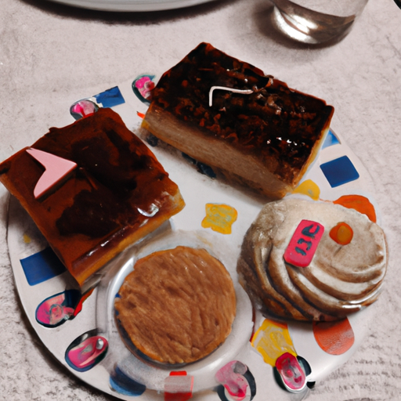

Le gâteau sans sucre pour diabétique est un gâteau qui ne contient pas de sucre. Ce gâteau est fait pour les diabétiques. Ce gâteau est très bon et très sain.

QUEL GÂTEAU MANGER QUAND ON A DU DIABÈTE ?
1. Le diabète est une maladie grave et il est important de prendre soin de votre santé. Cela dit, vous pouvez toujours manger des gâteaux même si vous avez du diabète. Il existe plusieurs types de gâteaux qui sont adaptés aux diabétiques.
2. Voici une liste de quelques gâteaux que vous pouvez manger si vous avez du diabète :
-Gâteau au fromage
-Gâteau à la carotte
-Gâteau au chocolat
-Gâteau aux fruits
3. Vous pouvez aussi faire des gâteaux vous-même en utilisant des ingrédients spéciaux qui sont adaptés aux diabétiques. Il existe de nombreuses recettes disponibles sur internet.
4. Si vous avez du diabète, il est important de manger des gâteaux avec modération. Vous devriez aussi demander conseil à votre médecin ou à votre diététicien afin de savoir quels gâteaux vous pouvez manger.
QUEL BISCUIT SANS SUCRE POUR DIABÉTIQUE ?
Les diabétiques ont souvent du mal à trouver des biscuits sans sucre qui ne soient pas trop sucrés. Voici une liste de biscuits sans sucre qui conviendront aux diabétiques :
- Les biscuits sans sucre de la marque "Lu"
- Les biscuits sans sucre de la marque "Bahlsen"
- Les biscuits sans sucre de la marque "Gullon"
Vous pouvez également trouver des biscuits sans sucre dans certaines grandes surfaces, comme les biscuits "Grand'Italia" de chez Carrefour.
QUELLES SONT LES ALTERNATIVES AU SUCRE POUR RÉALISER UN DESSERT DIABÉTIQUE ?
Il existe de nombreuses alternatives au sucre pour réaliser un dessert diabétique. Voici quelques-unes des meilleures options :
1. stévia
2. xylitol
3. erythritol
4. sorbitol
5. maltitol
La stévia est une plante dont le extrait est 300 fois plus sucré que le sucre. Cette plante est originaire d'Amérique du Sud et est maintenant cultivée dans le monde entier. La stévia est une excellente alternative au sucre pour les personnes atteintes de diabète, car elle ne fait pas monter la glycémie.
Le xylitol est un édulcorant naturel extrait de l'écorce de certains arbres. Le xylitol est aussi appelé "sucre de bouleau", car c'est l'arbre dont il est le plus souvent extrait. Le xylitol est un bon choix pour les diabétiques, car il n'augmente pas la glycémie. De plus, le xylitol a un goût et une texture semblables au sucre.
L'erythritol est un édulcorant naturel extrait de certains fruits et légumes. L'erythitol a un goût similaire au sucre, mais il est moins sucré. L'erythritol est un bon choix pour les diabétiques, car il ne fait pas monter la glycémie. De plus, l'erythritol est un bon probiotique, ce qui est bon pour la santé intestinale.
Le sorbitol est un édulcorant naturel extrait de certains fruits et légumes. Le sorbitol a un goût semblable au sucre, mais il est moins sucré. Le sorbitol est un bon choix pour les diabétiques, car il ne fait pas monter la glycémie. De plus, le sorbitol est un bon probiotique, ce qui
QUEL FRUIT POUR FAIRE BAISSER LE DIABÈTE ?
1. Les diabètes sont une maladie sérieuse et peuvent avoir de graves conséquences. Si vous souffrez de diabète, il est important de prendre des mesures pour le contrôler.
2. Une alimentation saine et équilibrée est l’un des meilleurs moyens de contrôler le diabète. Les fruits sont une partie importante de cette alimentation.
3. Certains fruits sont meilleurs que d’autres pour les personnes atteintes de diabète. Les fruits suivants peuvent aider à contrôler le diabète :
- Les pommes : les pommes sont riches en fibres. Les fibres aident à ralentir la digestion et à maintenir un taux de sucre sanguin stable.
- Les oranges : les oranges sont une bonne source de vitamine C. La vitamine C peut aider à réduire le risque de complications du diabète.
- Les bananes : les bananes sont une bonne source de potassium. Le potassium peut aider à contrôler la tension artérielle.
4. Il est important de manger des fruits en moderation. Les fruits sont riches en sucre et peuvent faire augmenter votre taux de sucre sanguin si vous en mangez trop.
5. Consultez votre médecin avant de modifier votre alimentation. Il peut vous aider à choisir les bons fruits et à établir un plan alimentaire sain et équilibré.
CONCLUSION
Conclusion:
Gâteau sans sucre pour diabétique: Comment faire un gâteau sans sucre pour les diabétiques?
Un gâteau sans sucre pour les diabétiques est possible! Il suffit de suivre quelques astuces et de se procurer les bons ingrédients. Avec ces conseils, vous pourrez réaliser un gâteau qui sera savoureux et sain pour les diabétiques.